🧭为什么不同：六把尺子
各地口味的差异，背后几乎都能归到下面这六个原因上。点进每个菜系的详情页， 留意「为什么这样」一段标注的小尺子标签——它告诉你这个菜系主要被哪几股力量塑造。 口味从来不是凭空“爱重口”或“爱清淡”，而是一方水土、一段历史共同算出来的结果。
🥢八大菜系
公认的八大菜系，是历史上影响最广、体系最完整的八支。它们大多对应一个文化与物产高度集中的核心区域。
🍲地方菜
八大之外，还有许多个性鲜明的地方风味。它们或自成一派、或交融而生，同样是“一方水土养一方菜”的好例子。
→
从“知道”到“做到”
每个菜系的「家常可借鉴」都能直接搬进自家厨房。想动手，去 案例菜库 找对应的菜照着练；想搞懂味型怎么调，看 第三篇 · 调味与酱料；火候和锅气的门道在 第四篇 · 火候与技法；遇到生词，术语表 一查就懂。